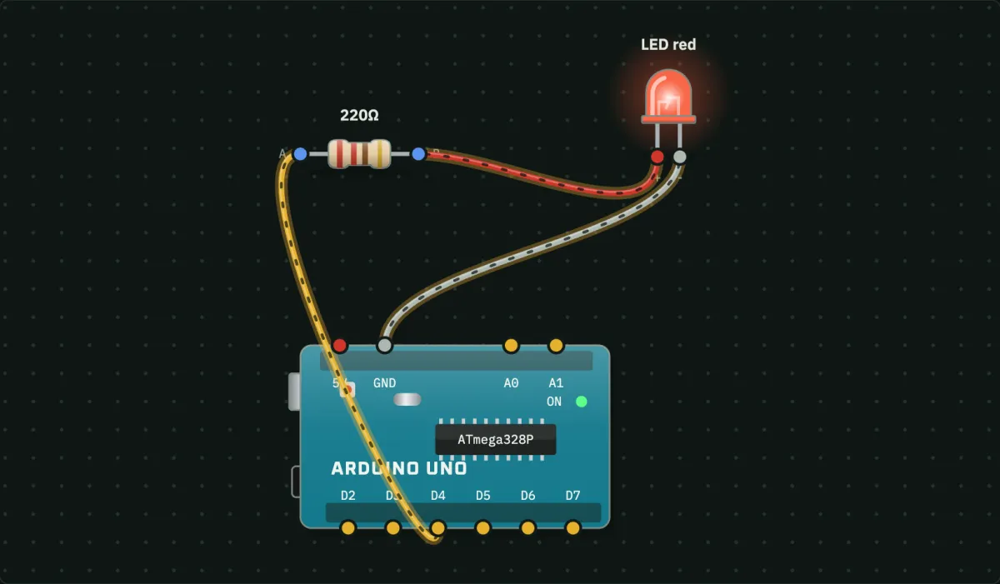
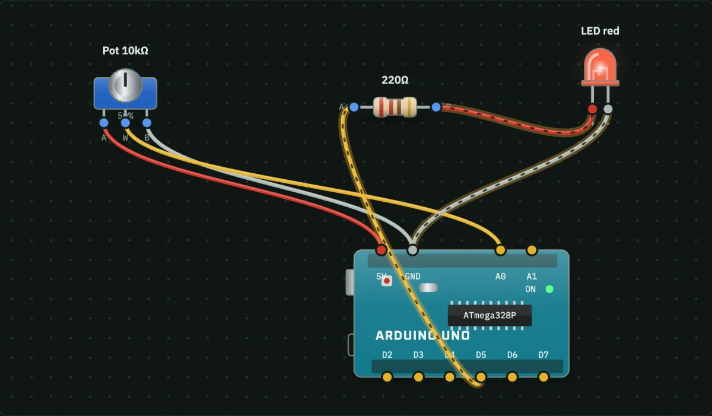
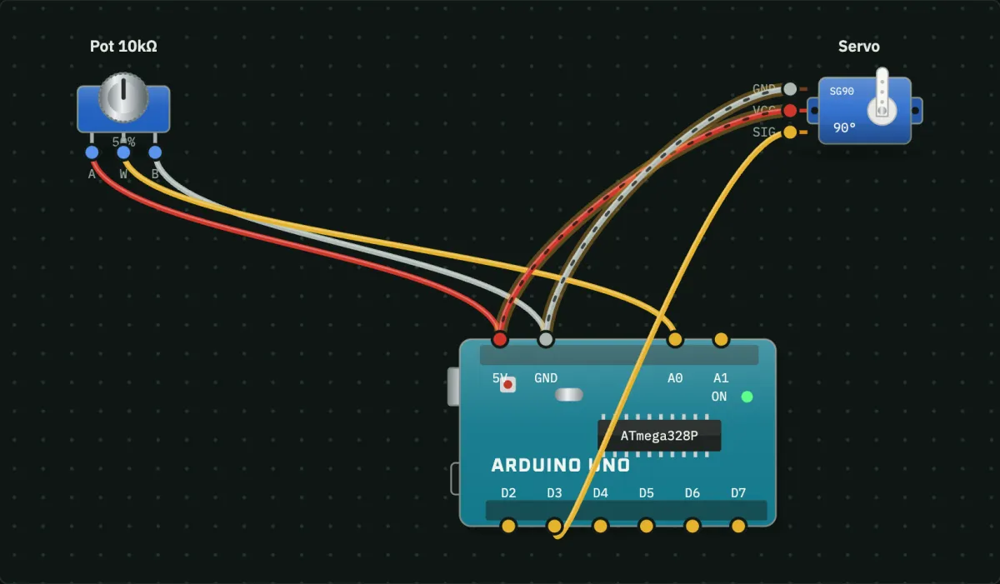
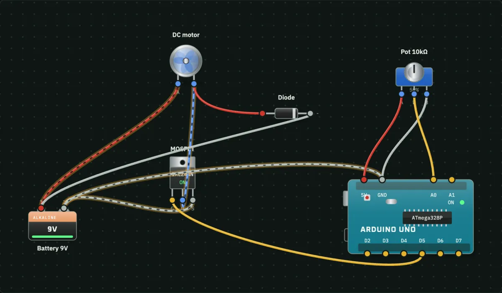
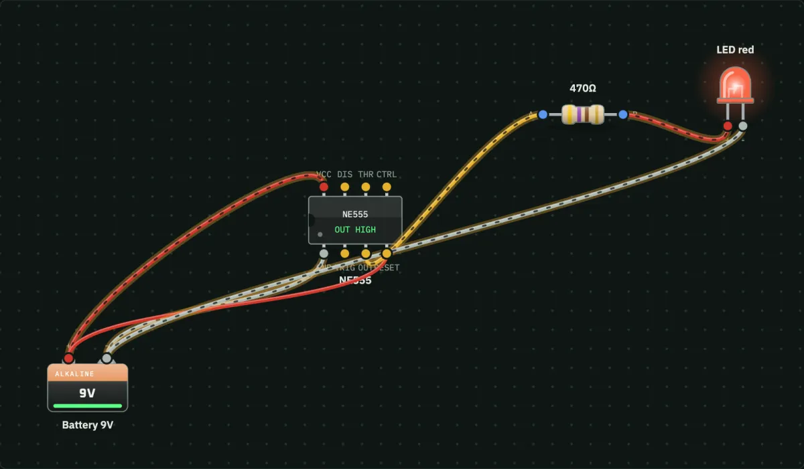
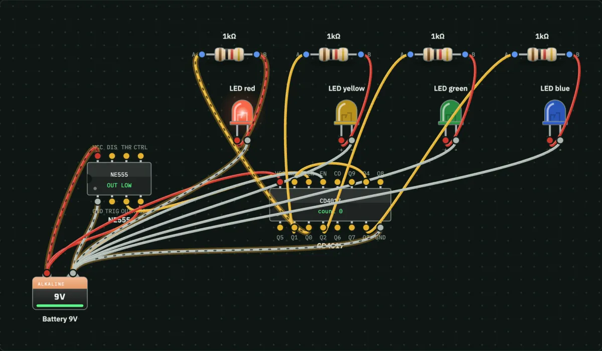
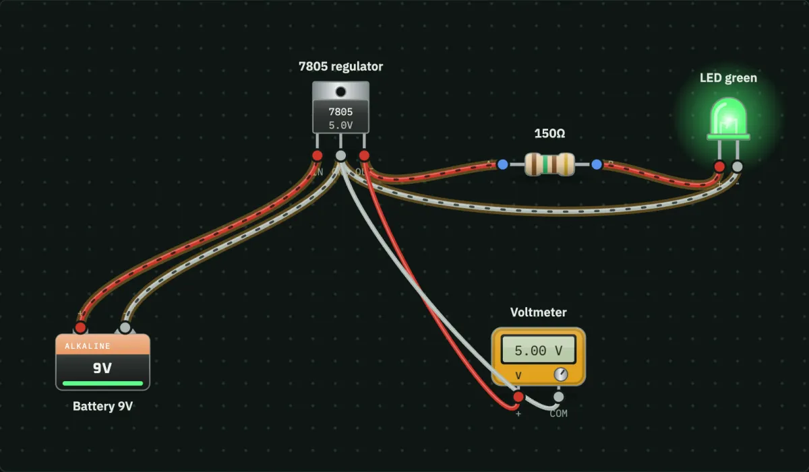
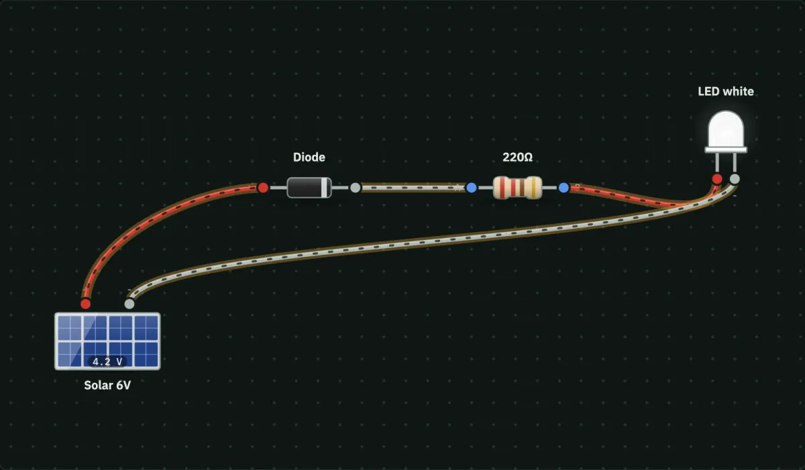
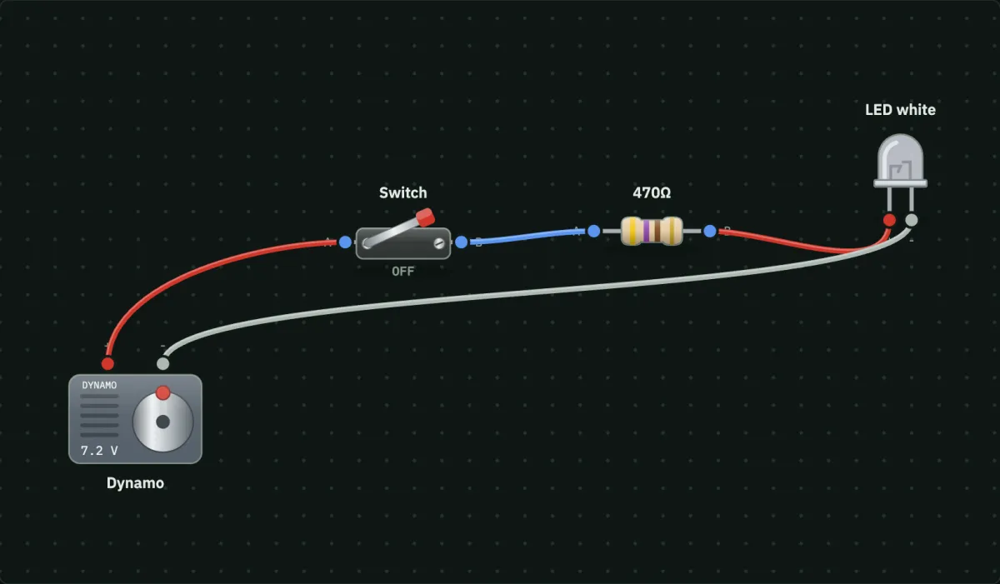

Arduino and Electronics Projects with Circuit Diagram and Code
Step-by-step projects for school, college and science fairs. Each guide has the circuit diagram, a parts list with typical Indian prices, the wiring, the code, and a button to try the circuit free in your browser before you buy anything.
▶ Open the free circuit simulatorArduino and Raspberry Pi

Smart Dustbin using Arduino, Ultrasonic Sensor and ServoIntermediate · parts about ₹630

Automatic Night Lamp using LDR Sensor and ArduinoBeginner · parts about ₹620

Traffic Light using Arduino and 3 LEDsIntermediate · parts about ₹459

Smart Fan and Fire Alarm using Arduino and Temperature SensorIntermediate · parts about ₹750

Burglar Alarm (Motion Detector) using PIR Sensor and ArduinoBeginner · parts about ₹560

Parking Sensor using Ultrasonic Sensor, Arduino and BuzzerIntermediate · parts about ₹543

Calculator using 4×4 Keypad, 16×2 LCD and a MicrocontrollerBeginner · parts about ₹385

LED Blink using Arduino: the First ProjectBeginner · parts about ₹453

LED Dimmer using Potentiometer and Arduino PWMBeginner · parts about ₹468

Control a Servo Motor with a Potentiometer and ArduinoBeginner · parts about ₹585

DC Motor Speed Control using MOSFET, Potentiometer and ArduinoIntermediate · parts about ₹572

Smart Home Light using Raspberry Pi, PIR Sensor and LDRIntermediate · parts about ₹4,750
Circuits without code

LED Flasher using 555 Timer ICBeginner · parts about ₹38

LED Chaser (Running Lights) using 555 and CD4017Beginner · parts about ₹62

9 V to 5 V Regulator using 7805Beginner · parts about ₹293

Solar Garden Light CircuitBeginner · parts about ₹185

Hand-Crank Dynamo TorchBeginner · parts about ₹133